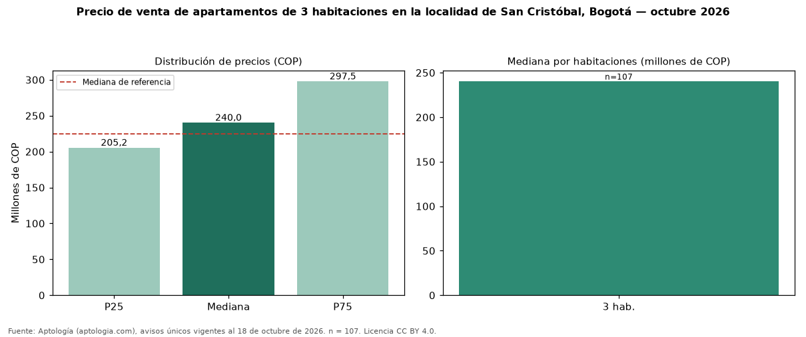

Precio de venta de apartamentos de 3 habitaciones en la localidad de San Cristóbal, Bogotá — octubre 2026
COP 240 millones es la mediana de venta de apartamentos de 3 habitaciones en la localidad de San Cristóbal, Bogotá, según 107 avisos únicos. Eso es 7 % más que la mediana de apartamentos en la localidad de San Cristóbal, Bogotá (COP 225 millones). En todo Bogotá, la misma combinación tiene mediana COP 890 millones (−73 %). Por metro cuadrado, la mediana es COP 4.445.833/m² (−5 % frente a COP 4.687.500/m²), puesto 16 de 18 localidades comparables. En el mismo grupo: 1 habitación, COP 175 millones; 2 habitaciones, COP 212 millones; 4 o más habitaciones, COP 425 millones. El área mediana es 52 m² (referencia: 48 m²). El estrato más frecuente es 2. Datos abiertos CC BY 4.0 de Aptología; fuente y búsqueda de inmuebles: https://www.aptologia.com/venta/bogota. Archivos: PDF de 2 páginas, CSV con las cifras y gráfica PNG.

| Avisos únicos | 107 |
|---|---|
| Percentil 25 | COP 205.165.000 |
| Mediana | COP 240.000.000 |
| Percentil 75 | COP 297.500.000 |
| Mediana por m² | COP 4.445.833 |
Fuente: avisos vigentes de portales inmobiliarios recopilados por Aptología, deduplicados (mínimo 30 avisos únicos por celda). Precios pedidos, no cerrados. Fecha: 2026-10-18.